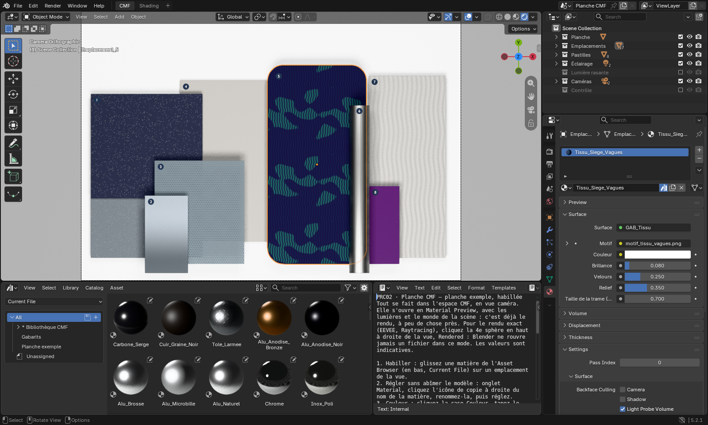

PRC02 · Planche CMF · Mémo participant
Planche CMF en 3D : les cinq gestes
PRC02 · Design & visualisation temps réel avec Blender · Blender 5.2 LTS, interface en anglais
Fichier PRC02_CMF_planche.zip · Version du 24 novembre 2026

PRC02 · Planche CMF · Mémo participant
PRC02 · Design & visualisation temps réel avec Blender · Blender 5.2 LTS, interface en anglais
Fichier PRC02_CMF_planche.zip · Version du 24 novembre 2026
blender_assets.cats.txt range les matières dans l'Asset Browser.
PRC02_CMF_planche_vierge.blend, puis File > Save As sous votre nom. La planche exemple sert de modèle.

1F2A44) et validez par Entrée. Brillance et Relief vont de 0 à 1 ; les tailles sont en millimètres.
Ctrl + F12. L'image A4 paysage, de 2339 x 1654 px (200 dpi), s'écrit dans rendus/planche_0001.png, à côté du fichier. Pour l'image finale, choisissez Render Properties > Render Engine > Cycles, puis Ctrl + F12 : le rendu prend quelques minutes. Revenez ensuite à EEVEE pour travailler.
G : sa pastille la suit. Ctrl + Z annule le dernier geste.